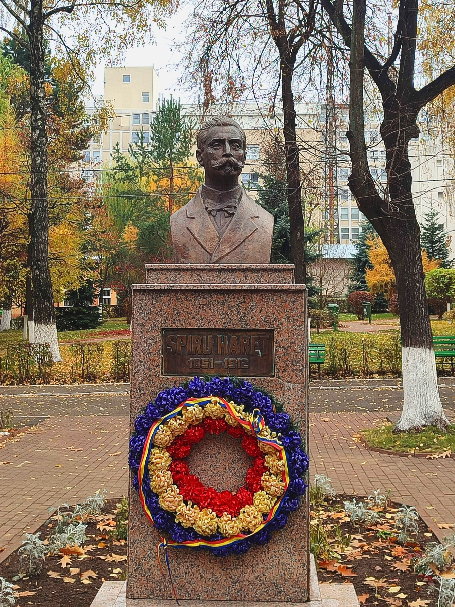

C.N.I.S.H.
Bine ați venit! Astăzi vă voi împărtăși câteva aspecte fascinante despre Colegiul Național de Informatică "Spiru Haret" din Suceava - locul în care învățarea devine o călătorie palpitantă și unde pasiunea pentru cunoaștere se întâlnește cu tehnologia de vârf.
În inima orașului Suceava, într-un cadru pitoresc și plin de istorie, Colegiul nostru își deschide porțile pentru a ghida mintea tânără către excelență. Cu o tradiție bogată și o reputație de neegalat în domeniul informaticii, suntem mândri să fim parte din această comunitate academică de excepție.

Dar Colegiul nostru este mult mai mult decât doar o școală. Este o comunitate în adevăratul sens al cuvântului, unde prieteniile se formează pentru o viață întreagă și unde colaborarea și spiritul de echipă sunt încurajate în fiecare aspect al vieții școlare.

La Colegiul Național de Informatică "Spiru Haret" din Suceava, fiecare zi este o aventură și fiecare lecție este o oportunitate de a descoperi ceva nou și captivant. Aici, suntem nu doar studenți, ci pionieri ai viitorului digital, pregătiți să facem față provocărilor și să aducem contribuții semnificative în lumea tehnologică în continuă schimbare.
Ce face Colegiul nostru atât de special? Ei bine, începând cu resursele noastre de ultimă generație, inclusiv laboratoarele de informatică dotate complet și biblioteca vastă, până la cadrele didactice dedicate și experimentate, fiecare aspect al experienței noastre educaționale este proiectat pentru a inspira și a încuraja elevii noștri să-și atingă potențialul maxim.
În plus, avem privilegiul de a fi înconjurați de peisaje naturale deosebite, oferindu-ne o oază de frumusețe și liniște pentru a ne relaxa și a ne reîncărca bateriile între provocările academice.

Așadar, vă invit cu căldură să vă alăturați nouă în călătoria noastră extraordinară către cunoaștere și excelență. La Colegiul Național de Informatică "Spiru Haret" din Suceava, viitorul este întotdeauna în mâinile noastre!